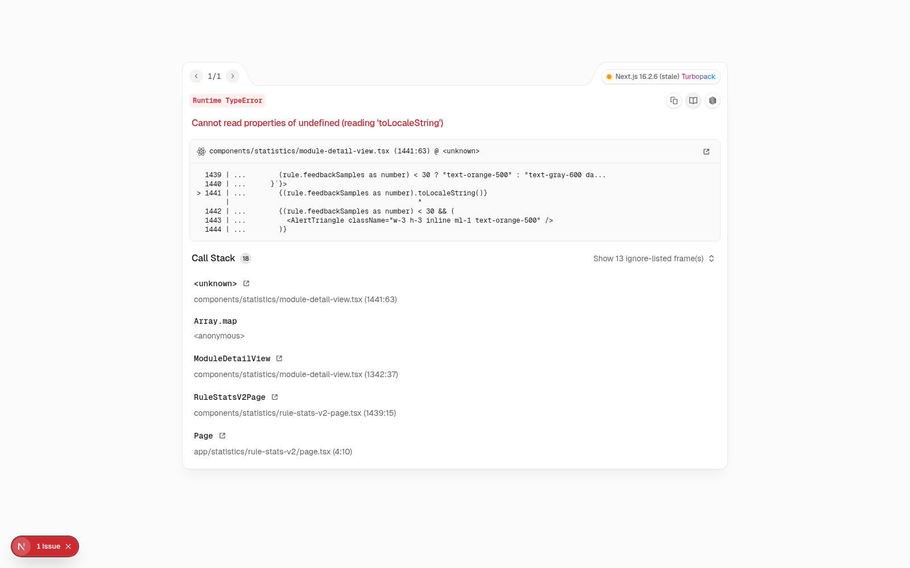
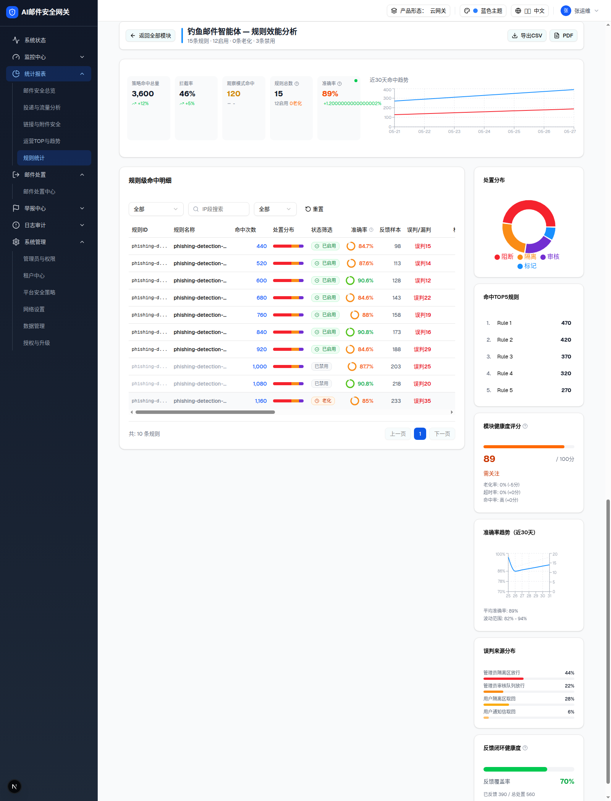
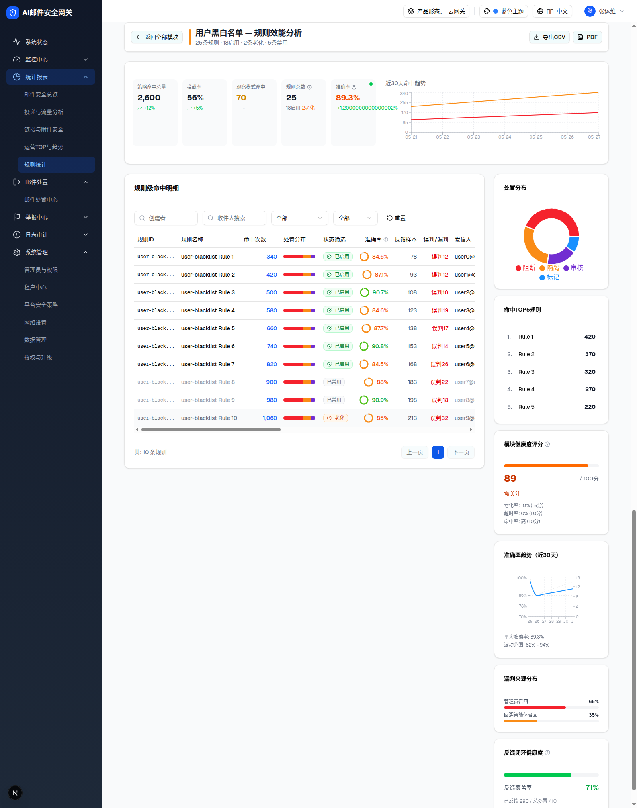

| 所属组件 | 2.6 卡片墙 → 明细视图（不同模块进入时表格列/筛选组不同） |
| 主文件 | statistics-rule-stats-v2/index.html |
| 触发路径 | 层级0 各模块卡片「查看详情」→ ModuleDetailView 按 module.id 选择 MODULE_COLUMNS / MODULE_FILTERS；含 "agent" 的模块共用 ai-agent 列集；未定义模块回落 ip-blacklist 列集 |

| 比对项 | demo 实际 | 本页复刻 | 是否一致 |
|---|---|---|---|
| #module-detail-view 是否渲染 | 否（opened=false，两模块均实测） | 复刻为错误浮层说明 | ✅ |
| 错误信息 | TypeError: Cannot read properties of undefined (reading 'toLocaleString') @ module-detail-view.tsx:1441:63 | 同左（从浮层 shadow DOM 提取） | ✅ |
| 规则ID | 规则名称 | 命中次数 | 处置分布 | 状态筛选 | 准确率 | 反馈样本 | 误判/漏判 | 检出量 | 高置信度检出(>0.9) | 中置信度检出(0.7-0.9) | 低置信度检出(<0.7) | 平均处理耗时 | AI增量价值 | 与传统规则交叉命中 | 模型版本 | 操作 |
|---|---|---|---|---|---|---|---|---|---|---|---|---|---|---|---|---|
| phishing-d... | phishing-detection-agent Rule 1 | 已启用 | 84.7% | 98 | 误判15 | 392 | 344 | 325 | 43 | 667ms | 47% | 24% | V2.0 | |||
| phishing-d... | phishing-detection-agent Rule 2 | 已启用 | 87.6% | 113 | 误判14 | 766 | 307 | 279 | 118 | 600ms | 43% | 38% | V2.1 | |||
| phishing-d... | phishing-detection-agent Rule 3 | 已启用 | 90.6% | 128 | 误判12 | 730 | 207 | 144 | 93 | 364ms | 22% | 23% | V1.2 | |||
| phishing-d... | phishing-detection-agent Rule 4 | 已启用 | 84.6% | 143 | 误判22 | 424 | 205 | 408 | 33 | 699ms | 28% | 57% | V2.0 | |||
| phishing-d... | phishing-detection-agent Rule 5 | 已启用 | 88% | 158 | 误判19 | 457 | 52 | 272 | 127 | 691ms | 18% | 61% | V3.1 | |||
| phishing-d... | phishing-detection-agent Rule 6 | 已启用 | 90.8% | 173 | 误判16 | 178 | 59 | 333 | 114 | 424ms | 25% | 30% | V2.2 | |||
| phishing-d... | phishing-detection-agent Rule 7 | 已启用 | 84.6% | 188 | 误判29 | 453 | 345 | 350 | 127 | 464ms | 17% | 56% | V3.0 | |||
| phishing-d... | phishing-detection-agent Rule 8 | 已禁用 | 87.7% | 203 | 误判25 | 414 | 84 | 474 | 77 | 405ms | 13% | 65% | V2.1 | |||
| phishing-d... | phishing-detection-agent Rule 9 | 已禁用 | 90.8% | 218 | 误判20 | 662 | 94 | 299 | 188 | 693ms | 26% | 43% | V1.2 | |||
| phishing-d... | phishing-detection-agent Rule 10 | 老化 | 85% | 233 | 误判35 | 361 | 87 | 485 | 219 | 249ms | 29% | 55% | V1.0 |

| ai-agent 专属列 | 宽/对齐 | 说明 |
|---|---|---|
| 检出量 | 100px 右 | number |
| 高置信度检出(>0.9) / 中置信度检出(0.7-0.9) / 低置信度检出(<0.7) | 140-150px 右 | number 三档 |
| 平均处理耗时 | 130px 右 | duration（ms） |
| AI增量价值 | 120px 右 | percent（AI 独有检出占比） |
| 与传统规则交叉命中 | 150px 右 | percent |
| 模型版本 | 100px 左 | text（VN.n） |
| 比对项 | demo 实际（浏览器 th 提取） | 预览 | 是否一致 |
|---|---|---|---|
| 表头 17 列 | 规则ID · 规则名称 · 命中次数 · 处置分布 · 状态筛选 · 准确率 · 反馈样本 · 误判/漏判 · 检出量 · 高置信度检出(>0.9) · 中置信度检出(0.7-0.9) · 低置信度检出(<0.7) · 平均处理耗时 · AI增量价值 · 与传统规则交叉命中 · 模型版本 · 操作 | 同左（DOM 原样嵌入，473 节点） | ✅ |
| 筛选组 | 置信度区间 + 操作类型（+ 状态筛选）——触发器实测显示「全部」「全部」 | 同左 | ✅ |

| 比对项 | demo 实际 | 预览/记录 | 是否一致 |
|---|---|---|---|
| 表头（16 列） | 规则ID · 规则名称 · 命中次数 · 处置分布 · 状态筛选 · 准确率 · 反馈样本 · 误判/漏判 · 发信人 · 收件人/组 · 操作类型 · 创建者 · 创建时间 · 命中次数 · 最后命中时间 · 操作（「命中次数」出现 2 次） | 同左，缺陷记 §9-D7 | ✅ |
| 右栏第 5 卡标题 | 漏判来源分布（管理员召回 65% / 回溯智能体召回 35%） | 同左（DOM 原样嵌入） | ✅ |
| 行级误判前缀 | 「误判12 / 误判12 / 误判10」（应为漏判，§9-D6） | 如实记录 | ✅ |
基础列（规则ID/规则名称/命中次数/处置分布/状态筛选/准确率/反馈样本/误判‧漏判 + 尾列操作）所有模块相同；下表为中间插入的专属列。列 i18n 见 ruleStatsV2.detail.*。
| 模块 | 专属列（宽/对齐/类型） | 专属筛选组（MODULE_FILTERS） |
|---|---|---|
| IP频率限制 | IP组/段(140L text)、时间窗口频率(140R text)、每日限制(100R num)、挂起策略(120L badge)、最后命中时间(160L)、拦截率(80R %) | 挂起策略(15分钟/30分钟/1小时/6小时/24小时/永久) + IP组(全部IP/可信IP/海外IP) |
| IP黑白名单 | IP地址/段(160L)、操作类型(100L badge)、阻断/隔离/丢弃/审核次数(90R×4)、最后命中时间、修改时间 | 操作类型(阻断/隔离/丢弃/审核/不启用) + IP段搜索 |
| RBL过滤 💥 | RBL服务器(200L)、查询次数(100R)、命中次数(100R)、查询超时率(110R %警示>5红)、平均查询耗时(130R)、查询失败率(110R %)、拦截率(80R)、最后命中时间 | RBL服务器(spamhaus/spamcop/barracuda) + 查询状态(正常/超时/失败)。当前点入即崩溃（§9-D1） |
| 海外邮件检测 | 检测方向(100L badge)、地区代码(100L)、地区名称(120L)、定位库类型(110L badge 自定义/系统)、命中次数、拦截率、最后命中时间 | 检测方向(接收/发送/域内) + 地区代码搜索 + 定位库类型 |
| 发信人黑白名单 | 发信人/域名(180L)、对象类型(100L badge 个人/组织/群组)、操作类型、阻断/隔离/审核次数、最后命中时间 | 对象类型 + 操作类型(阻断/隔离/审核) + 域名搜索 |
| 身份认证与仿冒检测 💥 | 检查项(180L)、失败次数(100R)、总检查次数(110R)、失败率(80R)、策略模板(100L badge 宽松/标准/严格/自定义)、观察模式(100L 是/否badge)、拦截率 | 检查项(MailFrom为空/格式错误/信封一致性/SPF/DKIM/DMARC/PTR) + 策略模板。当前点入即崩溃（§9-D1） |
| 发信行为管控 | 管控方向(100L badge)、管控对象类型(120L badge)、管控对象值(160L)、操作类型、规则优先级(100R)、命中次数、拦截率、最后命中时间 | 管控方向(接收/发送/域内/双向) + 管控对象类型(全局/海外IP/组织/个人/群组/IP/域名) + 操作类型(阻断/隔离/审核/标记) |
| 收信人检测 | 检测方向(80L)、策略类型(120L badge 数量限制/存在性检查)、最大收件人数(130R)、超限命中(130R)、存在性失败数(150R)、平均超限倍数(120R 小数)、拦截率 | 检测方向 + 策略类型 |
| 用户黑白名单 | 发信人(180L)、收件人/组(180L)、操作类型(阻断/放行)、创建者(160L)、创建时间(160L)、命中次数(100R·与基础列重复 §9-D7)、最后命中时间 | 创建者搜索 + 收件人搜索 + 操作类型(阻断/放行) |
| 附件安全检测 | 检测引擎(120L badge 反病毒/沙箱/图片识别/加密检测)、文件类型(120L badge)、命中次数、扫描超时率(110R 警示)、平均扫描耗时(130R)、超限动作(130L badge)、AV检出(110R)、沙箱检出(110R) | 检测引擎 + 文件类型(EXE/DOCX/PDF/ZIP) |
| URL检测与防护 | 检测方式(120L badge 沙箱/本地情报/云情报)、恶意URL数(130R)、情报命中率(130R %)、云查平均耗时(150R)、扫描异常率(110R 警示)、处置分布(120L 进度条) | 检测方式 + 恶意类型(钓鱼/恶意软件/垃圾) |
| 内容规则 | 匹配类型(100L badge 正则/关键字/内容组)、作用域(100L badge 主题/正文/附件内容)、操作类型、命中次数、近7天(100R)、近30天(100R)、老化状态(120L badge 正常/近期/老化)、最后命中时间 | 匹配类型 + 作用域 + 操作类型(审核/隔离/阻断) |
| 意图引擎 | 意图类型(140L badge 高危A/B/C/中危/低危)、检测方向(80L)、风险等级(80L badge 高橙中绿低)、命中次数、默认动作(100L badge)、处置分布(120L 进度条) | 意图类型 + 检测方向 |
| 4×智能体（共用 ai-agent） | 检出量、高/中/低置信度检出、平均处理耗时、AI增量价值、与传统规则交叉命中、模型版本（见上方样例） | 置信度区间(高>0.9/中0.7-0.9/低<0.7) + 操作类型 |
| 相似检测 | 检测方向、相似度阈值(110R %)、触发数量阈值(130R)、聚类数量(100R)、平均聚类大小(130R 小数)、观察模式命中(130R)、正式模式命中(130R) | 检测方向 + 相似度区间(80-90/90-95/95-100%) |
| 高级过滤规则 | 关键字(160L)、作用域(140L badge 接收/发送/收发)、操作类型、命中次数、过期时间(160L·<30天橙色+「N天后到期」)、规则优先级(100R)、最后命中时间 | 作用域 + 关键字搜索 + 过期状态(正常/即将过期/已过期) |
相似检测明细表头浏览器实测（16 列）：规则ID · 规则名称 · 命中次数 · 处置分布 · 状态筛选 · 准确率 · 反馈样本 · 误判/漏判 · 检测方向 · 相似度阈值 · 触发数量阈值 · 聚类数量 · 平均聚类大小 · 观察模式命中 · 正式模式命中 · 操作